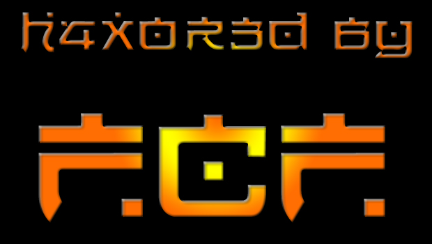

:: Magyar
Exporthitel Biztosító Rt. ::
"A kockázat el van vetve!"
én ebben nem lennék olyan biztos... ;-)
Ahogy látják a Magyar Exporthitel Biztosító Részvénytársaság oldalát heghaxolták. Szóval a cég szlogenjét nem lehet ráhúzni a Microsoft Windows NT-s szerververükre... Furcsa, hogy pont egy biztosító cég (ahol még azt sem lehet elmondani, hogy nincs pénz), pont õk nem figyelnek oda a biztonságra, mert ha esetleg egy mezei sulinetes szerver lenne, de nem az... Maradjunk a témánál... Tehát valami csuda folytán (mert Windows-ban vannak még csudák) meghaxoltuk a szervert, feltöltöttünk, töröltünk és távoztunk... tõmondatokban ennyi... Én is voltam/vagyok rendszergazda, de azért nem hagyok ennyire el egy szervert... Se valamire való service pack, semmi javítás... brrr... na de fiúk?!!!
§
Greetz 2:
Voyager2 a menth0r, _Foltos_ aki aki csak, EnRoX
original punxter, BlackCat szeretem a macskákat... rugdosni
;-))), skYro , [Diablo] mert, [Cr0w]
legalább te segitettél valamit #linux.hu -n és nem azt zajkóztad, hogy "nézd meg
a man"-t, ehhez egyszerûbb lenne arra a csatira beállítani egy botot...,
haveroknak EfNet-re, fõleg #darknet #attrition #hacker #hackers...
RSC TM-nek mert legalább õ tud rendesen programozni ;-), Sea-you-nak
csak mert csinált psyhopeth warez-t jól... Krix-nek csak mert ismerem
régóta meg freebsd fun ezerrel... Nomeg (de nem utolsó sorban) AngelHunter-nek
meg Tonyo-nak... hm akkor legyen roadr ,bár kicsit
vissza stílusból... úgy egész normális is tudsz te lenni ;-)
Team Greetz
2:
The Haxor Nation Crew szép volt fiúk eddigi
tevékenységetek, remélhetõleg még találkozunk... Aztán greetz új haveroknak -->
wh33l gr0up, köszi kmf.hu-s greetzért ;-), mestereknek {AiC}-nál...aztán
HPA-nak és eddigi rendes munkájukért... jah, meg a Microsoft-nak és
Billy boy-nak, hogy megtörhettük ezt a szervert... ezt fõleg nekik köszönhetjük...
;-) megmondom ugye, hogy megmondom ;-)
Channel
Greetz 2:
#eurohack , #magyar ,
#delphi.hu , #linux.hu , #hacker.ru
, #szif , #freebsd.hu , #punkroom mertugye PunX n3v3r
d34d... akkor legyen EFNet-rõl #darknet, #attrition, #hacker , #hackers
Anti-Greetz vagyis sUx 2:
nagyképû köcsög MaD_MiND-nak... Kicsit
röhejes... most éppen split alkalmával lehetne takeover #hacklife, de
majd máskor, ez fontosabb ;-) báár... Ugyanez vonatkozik www.index.hu -ra
is, aki félretájékoztatja olvasóit, sokáig igy megy aztán majd fellázadnak haxor-ok
és volt index.hu ;-), Ki is felejtettem majdnem NODESIGN-t
antigreetzbõl... alias MaD_MiND öcsémet... neki két antigreetz is
jár, mert olyan lameren megtörte azt a védtelen kis szervert, mármint a
www.adrenalin.hu -t, aminek már a deface oldal több mint egy hete ordít
nyitóoldalon... csak nem wuftp? ;-)... Óriási ANTIGREETZ #hacklife csatornának
IRCNET-en --> Ki keres, az talál, legalábbis lámákat ;-)))) Csiszár Jenci
bácsinak, hogy fasz mûsorában a kereskedelmi médiákhoz híven
felretájékoztatja az országot... Jah... Obotak mesternek... egyrészt
mert utolsó deface-kor kiírtad greetz-be #hacklife és ez bassza azóta
is csõröm, megugye tudom mi a rendes neved Petike ;-), lakcím, iskola, stb. stb. :-)))
reszkess mester mert nemsokára r|s3 0f tH3 tRuLy h4X0rZ lesz ;-))) Addig
is legyen mindenki jó, járjon iskolába, tanuljon sokat és ébredjen rá, hogy a világ
csak ámítás...
| Never be, Never see, Won't see what might have been... What I've felt, What I've known, Never shined throug in what I've shown... Never free, Never me..." Metallica: The Unforgiven |
-:: h4x0r3d bY f3arL3sS cRimIn4L f0rC3 in 2001 ::-